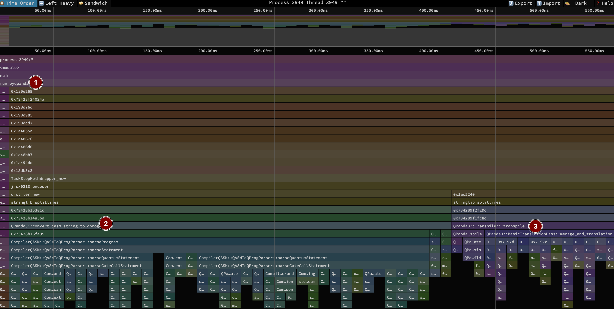
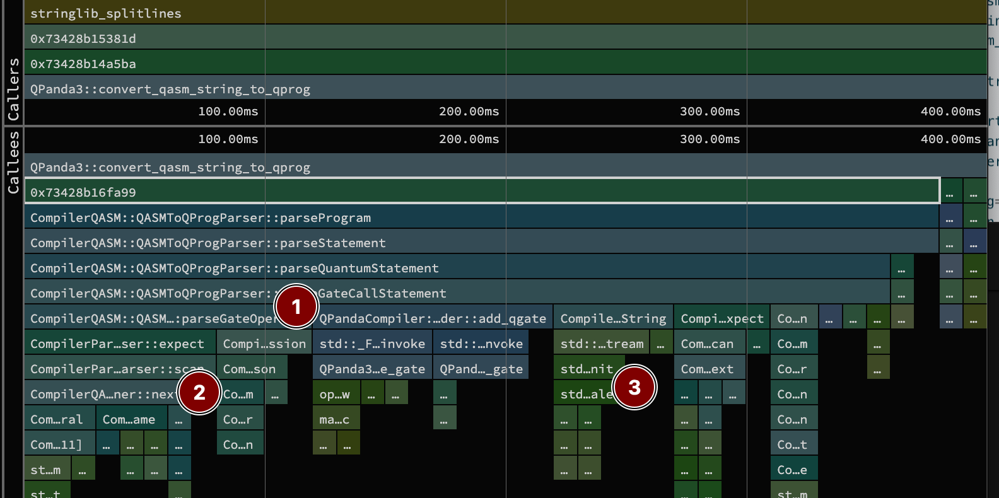
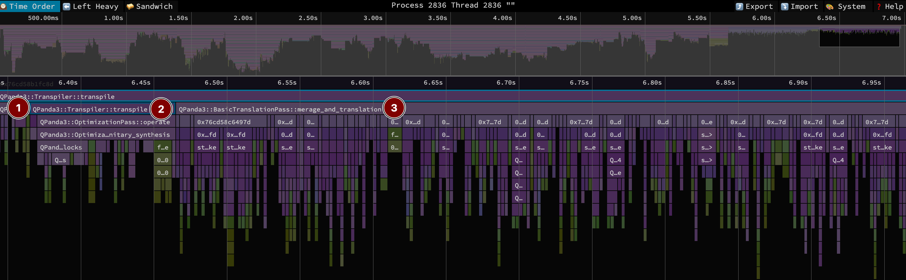

Profiling Quantum Compilers: pyqpanda
For the next post in the quantum compiler profiling series, we will focus on pyqpanda3 version 0.3.1. pyqpanda3 is “high-performance quantum programming framework that enhances quantum computing efficiency through optimized circuit compilation, an advanced instruction stream format (OriginBIS), and hardware-aware execution strategies” developed by OriginQ. Although freely available as a python package, it is closed source with the python code shipping compiled shared object files for supported platforms. I’ve included it because it is very fast and performant on benchmarks, probably thanks to its internal represenation of quantum circuits as a compact binary instruction stream. There are more details in this arXiv paper from the OriginQ team, but even then, only at a high-level.
Overview
As we did the last times, we begin with a top-level view of the compilation. This took a total of 560 milliseconds. Remember, we are sampling 100 times per second, so this is only 56 samples. You can inspect this function-aggregated view in speedscope here.

The benchmark harness code is below, with the code annotated with the labels in the image above.
def run_pyqpanda(qasm): # (1)
from pyqpanda3.intermediate_compiler import (
convert_qasm_string_to_qprog,
)
from pyqpanda3.transpilation import Transpiler
circuit = convert_qasm_string_to_qprog(qasm) # (2)
transpiler = Transpiler()
return transpiler.transpile( # (3)
circuit,
init_mapping={},
optimization_level=2,
basic_gates=["RX", "RY", "RZ", "H", "CNOT"],
)The bulk of the time is in two spots:
- 2 [71%, 400ms] in
convert_qasm_string_to_qprogparsing the 25K line QASM file into pyqpanda3’s in-memory circuit representation. - 3 [27%, 150ms] in
transpileactually optimizing the circuit.
Not visible is the python import time, which was fairly negligible at 10ms. The overall runtime is almost 4 times faster than the next best compiler benchmarked for this QFT circuit.
Parsing
pyqpanda3 is quite fast, but it’s notable that it spends more time parsing than transpiling the circuit.

In the sandwich view above, we see what is likely a hand-built parser + tokenizer. The hierarchy of calls to 1 show the parser side, where a program is comprised of statements, which can probably be quantum or classical. Our QASM file is all quantum ones that are gate calls with operands. Below those parsers in 2 you can see a call to CompilerQASM::QASMScanner::next that pulls out the next token for the parser.
Under the hood this is using C++ standard library streams for this. For example, the CompilerParser::Scanner::consumeNumberLiteral uses a C++ stringstream to read into the number. There is some overhead from streams dealing with locales (also in 3 when calling CompilerParser::Token::toString). Specifically, parsing will have to call locale facets (ctype, numpunct, num_get) to classify characters and handle decimal points/thousands separators that may differ by region. Streams and locales also have bookkeeping on whitespace and stream state. These can involve a few layers of indirection (via virtual function dispatch) that are a tad heavy for these short parsing calls. I’m nitpicking here, but given QASM has a specification, you might get more performance here with a leaner/purpose-built parser.
Transpiling
Without the source, it’s even harder to tell what is happening with transpilation, but we at least get a hint from the time-ordered view below1.
1 When writing this section, I decided to re-run the profiler with a higher sampling rate of 400 times per second because the standard 100 times/second had lots of single sample call stack entries that might not’ve been representative. Click here to view this version in speedscope. Note there was some impact to runtime as a result, but the relative durations of each phase of transpilation is similar and I prefer slightly more detailed callstacks.

This timeline view zooms in on the transpilation call, which has three main phases
- 1 [22.5ms] is
DAGQCircuit::from_qprog, which converts from a general representation to a DAG circuit, presumably to be a DAG-style IR for the style of circuit optimizations in pyqpanda. - 2 [66ms] in
Transpiler::transpile. I see calls toOptimizationPass::unitary_synthesis. Of note is a final call toDAGQCircuit::batch_insert, which would potentially help performance by modifying the dag all at once at the end, versus doing it piece by piece as its walked - 3 [280ms] in
BasicTranslationPass::merage_and_translation(typo is in the original binary). Here, I see calls liketranslate_cz_to_cx_h,translate_oracle_to_cz_u4,translate_u3_to_rx_rz. I also see a stack of calls forTwoQubitBasisDecomposerthat has aWeyldecomposition. All of these are repeated a few times, suggesting some looping pass.
Unfortunately, its hard to backout the overall strategy here. The documentation states for this highest level optimization configuration, “advanced optimizations are performed, including matrix optimization, two-qubit gate cancellation, and single-qubit gate merging.” In practice, that looks like some standard translation/substitution rules, and then some consolidation followed by some two-qubit decomposition/synthesis before repeating.
Demangling and dependencies
Before wrapping up, I did want to poke a little bit more at the shared object files to learn a little more of what is used. For my mac, running the code below demangles the symbols of the shared library and then collects them by C++ namespace and name. Note this just looks at the transpilation module from pyqpanda3.
nm --demangle transpilation.cpython-313-darwin.so \
| awk '{print $3}' \
| grep '::' \
| sed 's/(.*//g' \
| awk -F'::' '{print $1"::"$2}' \
| sort -uMost are in QPanda3, but we do see a use of Eigen for linear algebra and fmt for string formatting. You can also see a bunch of functions like QPanda3::translate_rxx_to_cx_rz_h, which correspond to the built-in gate rewrite rules.
List of symbols
_compute_theta::
_dec_uc_sqg::
calculate_score::
check_gate_connected::
CompilerOriginIR::IRQProgNodeCollectorParser
CompilerOriginIR::OriginIRScanner
CompilerParser::Parser
CompilerParser::Scanner
dfs::
Eigen::internal
fmt::v11
generateBinarySeries::
generateCombinations::
longest_path_dfs::
modArray::
pybind11::error_already_set
QPanda3::amplitude_damping_error
QPanda3::BasicTranslationPass
QPanda3::block_index_map_key
QPanda3::cancellation_map_key
QPanda3::ChipBackend
QPanda3::CPUAvx2
QPanda3::CPUQVM
QPanda3::create_gate
QPanda3::DAG
QPanda3::DAGNode
QPanda3::DAGQCircuit
QPanda3::decoherence_error
QPanda3::decompose
QPanda3::decompose_to_RPhi
QPanda3::decomposeTensorProduct
QPanda3::DefaultTranspilationPasses
QPanda3::depolarizing_error
QPanda3::diagonal_decomposition
QPanda3::DrawByLayer
QPanda3::DrawPicture
QPanda3::EquivalenceLibrary
QPanda3::GateUnitaryMatrix
QPanda3::GateUnitaryMatrixUtils
QPanda3::generate_topology
QPanda3::get_precessor_single_gates_map
QPanda3::get_unitary_matrix
QPanda3::get_unitary_matrix_order
QPanda3::GetUsedQubits
QPanda3::InitPass
QPanda3::is_double_gate
QPanda3::is_single_gate
QPanda3::is_supported_avx2
QPanda3::is_tensor_product
QPanda3::isometry_decomposition
QPanda3::IsometryDecomposition
QPanda3::Karus
QPanda3::LayoutPass
QPanda3::LinearDepthDecomposition
QPanda3::MPS_Tensor
QPanda3::NameGenerator
QPanda3::NoiseCircuit
QPanda3::NoiseModel
QPanda3::NoiseUtils
QPanda3::OCircuitFusion
QPanda3::operator<<
QPanda3::OptimizationPass
QPanda3::pauli_x_error
QPanda3::pauli_y_error
QPanda3::pauli_z_error
QPanda3::phase_damping_error
QPanda3::pre_handle
QPanda3::QCircuit
QPanda3::QGate
QPanda3::QGateImplementation
QPanda3::QMeasure
QPanda3::QOracle
QPanda3::QPandaOptions
QPanda3::QProg
QPanda3::QProgProcessor
QPanda3::QResult
QPanda3::QSDecomposition
QPanda3::QStateCPU
QPanda3::QStateMPS
QPanda3::QuantumError
QPanda3::QuantumInformation
QPanda3::QuantumRegister
QPanda3::QuantumState
QPanda3::remap_qgate
QPanda3::RoutingPass
QPanda3::SabrePreLayout
QPanda3::SchedulingPass
QPanda3::SingletonPermutation
QPanda3::task
QPanda3::translate_ch_to_cx_h_p
QPanda3::translate_cp_to_cx_p
QPanda3::translate_crphi_to_oracle
QPanda3::translate_crx_to_cx_u1_u3
QPanda3::translate_cry_to_cx_ry
QPanda3::translate_crz_to_cx_rz
QPanda3::translate_cu1_to_cx_u1
QPanda3::translate_cu2_to_cx_u1_u3
QPanda3::translate_cu3_to_cx_u1_u3
QPanda3::translate_cu4_to_cx_p_u3
QPanda3::translate_cx_to_cp_u3
QPanda3::translate_cx_to_cz_h
QPanda3::translate_cx_to_cz_rz_x1
QPanda3::translate_cy_to_cx_p
QPanda3::translate_cz_to_cx_h
QPanda3::translate_h_to_rx_ry
QPanda3::translate_h_to_RZ_X1
QPanda3::translate_h_to_u2
QPanda3::translate_i_to_u1
QPanda3::translate_iswap_to_cx_s_h
QPanda3::translate_oracle_to_cz_u4
QPanda3::translate_p_to_RZ
QPanda3::translate_p_to_u1
QPanda3::translate_rphi_to_u3
QPanda3::translate_rx_to_rz_x1
QPanda3::translate_rx_to_u3
QPanda3::translate_rxx_to_cx_rz_h
QPanda3::translate_ry_to_rz_x1
QPanda3::translate_ry_to_u3
QPanda3::translate_ryy_to_cx_rx_rz
QPanda3::translate_rz_to_u1
QPanda3::translate_rzx_to_cx_rz_h
QPanda3::translate_rzz_to_cx_rz
QPanda3::translate_s_to_RZ
QPanda3::translate_s_to_u1
QPanda3::translate_sqiswap_to_cz_rz_x1
QPanda3::translate_swap_to_cx
QPanda3::translate_t_to_RZ
QPanda3::translate_t_to_u1
QPanda3::translate_u1_to_u3
QPanda3::translate_u2_to_u3
QPanda3::translate_u3_to_rphi_rz
QPanda3::translate_u3_to_rx_rz
QPanda3::translate_u3_to_u4
QPanda3::translate_u3_to_x1_rz
QPanda3::translate_u4_to_u3
QPanda3::translate_u4_to_x1_rz
QPanda3::translate_x_to_rx
QPanda3::translate_x_to_u3
QPanda3::translate_x_to_x1
QPanda3::translate_x1_to_rphi
QPanda3::translate_x1_to_rx
QPanda3::translate_y_to_ry
QPanda3::translate_y_to_u3
QPanda3::translate_y_to_x1_rz
QPanda3::translate_y1_to_rz_x1
QPanda3::translate_z_to_rz
QPanda3::translate_z_to_u1
QPanda3::translate_z1_to_rz
QPanda3::TranspilationPass
QPanda3::Transpiler
QPanda3::TwoQubitBasisDecomposer
QPanda3::TwoQubitWeylDecomposition
QPanda3::uc_decomposition
QPanda3::ucry_circuit
QPanda3::ucry_decomposition
QPanda3::ucrz_decomposition
QPanda3::unroll_quantum_circuit
QPandaCompiler::QProgNodeCollector
std::__1
Utils::convert_int_to_str
Utils::convert_uinteger_to_binary
Utils::number_to_base_string
WriteQCircuitTextFile::get_instanceTL;DR
The most surprising finding for pyqpanda3 is that the vast majority of the runtime (71%) was spent in the convert_qasm_string_to_qprog function parsing the QASM input, not optimizing the circuit. This is due to overhead in its C++ implementation, specifically from using standard library streams and locales, which could be made leaner for a fixed format like QASM.
The actual transpilation is remarkably fast. While it’s closed source, profiling and demangling the library revealed a multi-stage strategy involving a DAG representation, unitary synthesis, and Weyl decomposition. This peek under the hood also showed its reliance on the popular Eigen and fmt libraries. But it would be great to better understand how these steps are combined to give such strong performance!
AI Disclaimer: I’ve used LLMs to review and give feedback on this post, but the original content was written by me.